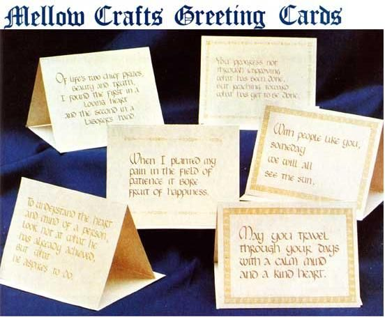

There's a young couple in New Hampshire who-in their own small way-are devoting much more than lip service to the future welfare of mankind. Naoto and Berri Inoue (carpenter and craft kit designer, respectively) decided early this year that the time had come for them to actively involve themselves in working for a better world. Here, in their own words (extracted from a letter they wrote to MOTHER), is what they did.
"Our main objective for the past five years has been to achieve self-sufficiency. We've been lucky to have had much success with our projects, but we must admit that there are no free lunches ... we've put a lot of sweat and love into them. But the point of this letter is not to show off what fortunate situations we've fallen into. It's to explain how we felt that- in order to completely achieve our life goals-we couldn't just look towards our land, our two geodesic domes, our woodshop, and our reputations as skilled workers,
"We realize that there are countless causes to be worked on...and we also know that we can't get much done with all our energy dipped into many pots. So the cause that we've chosen is the elimination of nuclear pollution.
"We had lots of thoughts on how to bring forth action, or at least education. But unfortunately all of them required money (for stickers, literature, etc.). Need we say that money for such projects is not easily come by?
"Still, Berri has studied art and had recently taken a course in calligraphy, so she decided to try her hand at designing some greeting cards. We chose quotations that were not just sharp 'no nuke' slogans, since we know that there are a lot of people out there who'd like to see the end of nuclear power and war but who for various reasons don't want to have bumper stickers or T-shirts that say so.
"Our cards-which are printed on recycled paper-can be sent to anyone on any occasion. On the back of each is a statement that the profits from their sale are being used to educate against nuclear power. Each package contains 12 cards (six different designs) and 12 envelopes, and we've prepared 1,000 such packages as a 'trial run'."
The Inoues have put $1,000 of their own hardearned money and a lot of their time into this venture. And, as you can see from the photo, their cards would be a perfect way to send holiday greetings...and would make nice Christmas gifts in themselves. So we're all for this young couple, and we hope you will be too. If you'd like to help Naoto and Berri make this project a success, send your name and address and $2.00 for each package desired (plus 354V postage and handling for one package, 55c for two, 75c for three, and 95c for four or more) to:
Mellow Crafts
RFD 2 off Grant Road
Newmarket, N.H. 03857
|
 |
|
|